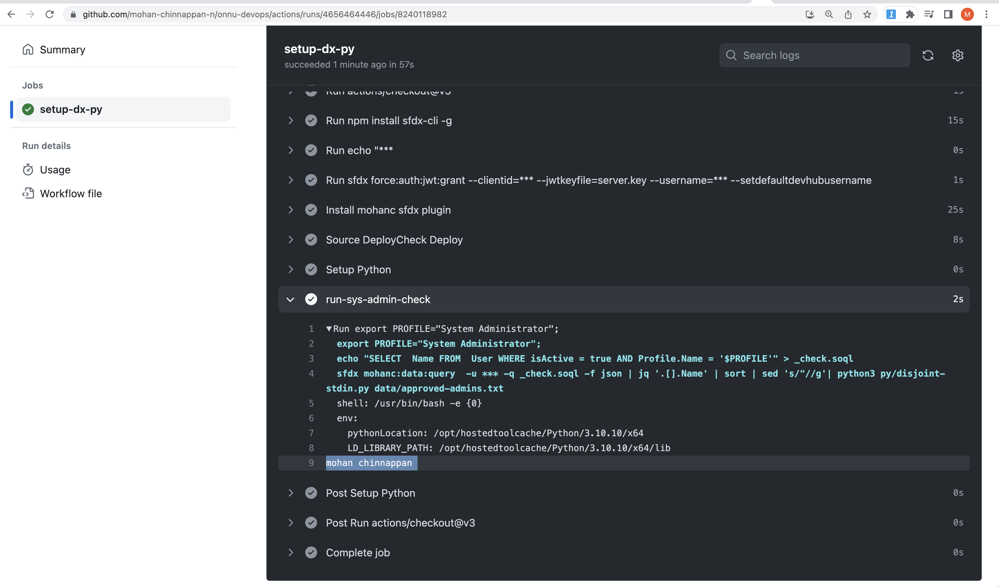
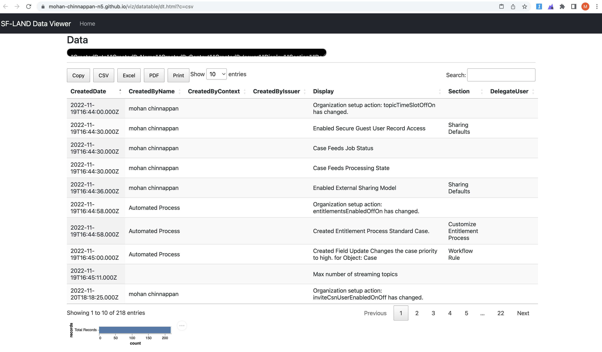

Auditing Scripts

Contents
- List unapproved users with given profile in the org
- List unapproved users having ModifyAllData
- List unapproved users having ViewAllData
- List Users with given Profile who have Role
- Check users with given PermissionSet
- Check SetupAuditTrail
- Operationalize Audit Scripts using github-actions
List unapproved users with given profile in the org
Sample approved_admins.txt content:
Ken Thompson
Dennis Ritchie
Niklaus Wirth
ActiveUsers.soql
SELECT Name FROM User
WHERE isActive = true AND Profile.Name = '$PROFILE'
disjoint-stdin.py
#!/usr/local/bin/python3
# print disjoint lines between stdin and input file
# mchinnappan
#--------------------------------------------------
import sys
usage = """
----------------------------------------------------------------
python3 disjoint-stdin.py ref_file.txt
- Checks and prints any line in the stdin not in the ref_file
----------------------------------------------------------------
"""
if len(sys.argv) != 2 :
print (f"Usage: {usage}")
exit(0)
file2 = sys.argv[1]
file1_contents = [line.strip() for line in sys.stdin.readlines()]
set1 = set(file1_contents)
with open(file2, 'r') as f2:
file2_contents = [line.strip() for line in f2.readlines()]
set2 = set (file2_contents)
for item in set1:
if item not in set2:
print(item.strip())
Script to find out the users not in the approved list
export PROFILE="System Administrator";
echo "SELECT Name FROM User WHERE isActive = true AND Profile.Name = '$PROFILE'" > _check.soql
sfdx mohanc:data:query -u ${{ secrets.SALESFORCE_DEVHUB_USERNAME }} -q _check.soql -f json | jq '.[].Name' | sort | sed 's/"//g'| python3 py/disjoint-stdin.py data/approved-admins.txt
- The output of this script will be :
- list of users whose profile is system administrator but their names are not in the
approved.txtfile.
- list of users whose profile is system administrator but their names are not in the
mohan chinnappan
Operationalize Audit Scripts using github-actions
name: Auditor
run-name: on-demand-auditor
on: [workflow_dispatch]
jobs:
setup-dx-py-audit:
runs-on: ubuntu-latest
steps:
- uses: actions/checkout@v3
- run: npm install sfdx-cli -g
- run: echo "${{ secrets.SALESFORCE_JWT_SECRET_KEY }}" > server.key
- run: sfdx force:auth:jwt:grant --clientid=${{ secrets.SALESFORCE_CONSUMER_KEY }} --jwtkeyfile=server.key --username=${{ secrets.SALESFORCE_DEVHUB_USERNAME }} --setdefaultdevhubusername
- name: Install mohanc sfdx plugin
run: |
echo 'y' | sfdx plugins:install sfdx-mohanc-plugins
sfdx plugins
- name: Source DeployCheck Deploy
run: |
cd mc2Project
sfdx force:source:deploy -u ${{ secrets.SALESFORCE_DEVHUB_USERNAME }} -p force-app -c --verbose
sfdx mohanc:tooling:query -q ../.soql/deploymentStatus.soql -u ${{ secrets.SALESFORCE_DEVHUB_USERNAME }} -f json > ./deploymentStatus.json
cat ./deploymentStatus.json
- name: Setup Python
uses: actions/setup-python@v3.1.3
with:
python-version: 3.10.10
# List unapproved users with given profile in the org - data/approved-admins.txt
- name: run-sys-admin-check
run : |
export PROFILE="System Administrator";
echo "SELECT Name FROM User WHERE isActive = true AND Profile.Name = '$PROFILE'" > _check.soql
sfdx mohanc:data:query -u ${{ secrets.SALESFORCE_DEVHUB_USERNAME }} -q _check.soql -f json | jq '.[].Name' | sort | sed 's/"//g'| python3 py/disjoint-stdin.py data/approved-admins.txt
# List unapproved users having ModifyAllData - data/approved-admins.txt
- name: run-ModifyAllData-check
run : |
export PERM="PermissionsModifyAllData";
echo "SELECT AssigneeId FROM PermissionSetAssignment WHERE PermissionSet.$PERM=true" > _check2.soql
sfdx mohanc:data:query -u ${{ secrets.SALESFORCE_DEVHUB_USERNAME }} -q _check2.soql -f json | jq '.[].AssigneeId' | sed 's/"//g' | python3 py/list2in.py |sed "s/{/SELECT Name FROM USER WHERE isActive=true AND Id IN (/g" | sed 's/}/)/g' > _psa_.soql;
sfdx mohanc:data:query -u ${{ secrets.SALESFORCE_DEVHUB_USERNAME }} -q _psa_.soql -f json | jq '.[].Name' | sed 's/"//g' | python3 py/disjoint-stdin.py data/approved-admins.txt
# List unapproved users having ViewAllData - data/approved-admins.txt
- name: run-ViewAllData-check
run : |
export PERM="PermissionsViewAllData";
echo "SELECT AssigneeId FROM PermissionSetAssignment WHERE PermissionSet.$PERM=true" > _check2.soql
sfdx mohanc:data:query -u ${{ secrets.SALESFORCE_DEVHUB_USERNAME }} -q _check2.soql -f json | jq '.[].AssigneeId' | sed 's/"//g' | python3 py/list2in.py |sed "s/{/SELECT Name FROM USER WHERE isActive=true AND Id IN (/g" | sed 's/}/)/g' > _psa_.soql;
sfdx mohanc:data:query -u ${{ secrets.SALESFORCE_DEVHUB_USERNAME }} -q _psa_.soql -f json | jq '.[].Name' | sed 's/"//g' | python3 py/disjoint-stdin.py data/approved-admins.txt
# List Users with given Profile who have Role
- name: run-users-with-role-check
run : |
export PROFILE="System Administrator";
echo "SELECT Name, UserRole.Name FROM User WHERE isActive = true AND Profile.Name = '$PROFILE' AND UserRole.Name != null" > _check3.soql
sfdx mohanc:data:query -u ${{ secrets.SALESFORCE_DEVHUB_USERNAME }} -q _check3.soql -f json | jq '.[].Name + "|" + .[].UserRole.Name' | sed 's/"//g'
# Check users with given PermissionSet - EinsteinAnalyticsPlusAdmin
- name: check-user-with-given-ps
run : |
export PERMSET="EinsteinAnalyticsPlusAdmin";
echo "SELECT Id, PermissionSetId, PermissionSet.Name, PermissionSet.ProfileId, PermissionSet.Profile.Name, AssigneeId, Assignee.Name FROM PermissionSetAssignment WHERE PermissionSet.Name LIKE '%$PERMSET%'" > _check4.soql
sfdx mohanc:data:query -u ${{ secrets.SALESFORCE_DEVHUB_USERNAME }} -q _check4.soql -f json |jq '.[].Assignee.Name + "|" + .[].PermissionSet.Name' | sed 's/"//g' | sort -u

- You can use this script for checking other profiles as well - say: Developer profile:
export PROFILE="Developer";
echo "SELECT Name FROM User WHERE isActive = true AND Profile.Name = '$PROFILE'" > _check.soql
sfdx mohanc:data:query -u mohan.chinnappan.n.sel@gmail.com -q _check.soql -f json | jq '.[].Name' | sort | sed 's/"//g'| python3 disjoint-stdin.py approved_developers.txt
List unapproved users having ModifyAllData
- psAssignment_id.soql
SELECT AssigneeId
FROM PermissionSetAssignment
WHERE PermissionSet.$PERM=true
- list2in.py
import sys
file1_contents = [line.strip() for line in sys.stdin.readlines()]
print (set(file1_contents))
export PERM="PermissionsModifyAllData"; sed "s/\$PERM/$PERM/" psAssignment_id.soql > _checkPS.soql;
sfdx mohanc:data:query -u mohan.chinnappan.n.sel@gmail.com -q _checkPS.soql -f json | jq '.[].AssigneeId' | sed 's/"//g' | python3 list2in.py |sed "s/{/SELECT Name FROM USER WHERE isActive=true AND Id IN (/g" | sed 's/}/)/g' > _psa_.soql; sfdx mohanc:data:query -u mohan.chinnappan.n.sel@gmail.com -q _psa_.soql -f json | jq '.[].Name' | sed 's/"//g' | python3 disjoint-stdin.py approved_mad.txt

List unapproved users having ViewAllData
export PERM="PermissionsViewAllData"; sed "s/\$PERM/$PERM/" psAssignment_id.soql > _checkPS.soql;
sfdx mohanc:data:query -u mohan.chinnappan.n.sel@gmail.com -q _checkPS.soql -f json | jq '.[].AssigneeId' | sed 's/"//g' | python3 list2in.py |sed "s/{/SELECT Name FROM USER WHERE isActive=true AND Id IN (/g" | sed 's/}/)/g' > _psa_.soql; sfdx mohanc:data:query -u mohan.chinnappan.n.sel@gmail.com -q _psa_.soql -f json | jq '.[].Name' | sed 's/"//g' | python3 disjoint-stdin.py approved_vad.txt
List Users with given Profile who have Role
cat usersWithRole.soql
SELECT Name, UserRole.Name FROM User
WHERE isActive = true AND Profile.Name = '$PROFILE' AND UserRole.Name != null
export PROFILE="System Administrator"; sed "s/\$PROFILE/$PROFILE/" usersWithRole.soql > _check.soql; \
sfdx mohanc:data:query -u mohan.chinnappan.n.sel@gmail.com -q _check.soql -f json | jq '.[].Name + "|" + .[].UserRole.Name' | sed 's/"//g'
- Sample output - pipe separated - Name|Role
Joe Carpenter|ROLE1
John Smith|ROLE2

Check users with given PermissionSet
cat PermsetUsers.soql
SELECT Id, PermissionSetId, PermissionSet.Name,
PermissionSet.ProfileId, PermissionSet.Profile.Name,
AssigneeId, Assignee.Name
FROM PermissionSetAssignment
WHERE PermissionSet.Name LIKE '%$PERMSET%'
export PERMSET="EinsteinAnalyticsPlusAdmin"; sed "s/\$PERMSET/$PERMSET/" PermsetUsers.soql > _psUsers.soql; sfdx mohanc:data:query -u mohan.chinnappan.n_ea2@gmail.com -q _psUsers.soql -f json |jq '.[].Assignee.Name + "|" + .[].PermissionSet.Name' | sed 's/"//g' | sort -u
output of this command
Mohan Chinnappan|EinsteinAnalyticsPlusAdmin

if you like to checked against an approved list
cat approved_crmaadmin.txt
John Smith
export PERMSET="EinsteinAnalyticsPlusAdmin"; sed "s/\$PERMSET/$PERMSET/" PermsetUsers.soql > _psUsers.soql; sfdx mohanc:data:query -u mohan.chinnappan.n_ea2@gmail.com -q _psUsers.soql -f json |jq '.[].Assignee.Name + "|" + .[].PermissionSet.Name' | sed 's/"//g' | sort -u | python3 disjoint-stdin.py approved_crmaadmin.txt
output of this command
Mohan Chinnappan
Check SetupAuditTrail
Using Datatable view
sfdx mohanc:data:bulkapi:query -u mohan.chinnappan.n.sel2@gmail.com -q setupAduit.soql; sed 's/CreatedBy.Name/CreatedByName/g' setupAduit.soql.csv | pbcopy; open "https://mohan-chinnappan-n5.github.io/viz/datatable/dt.html?c=csv"

Using sqlite3
#!/usr/local/bin/python3
# SQL Query for CSV using pandas and sqlite
# mchinnappan
#--------------------------------------------------
import sys
import time
usage = """
----------------------------------------------------------------
python3 csvQuery input_file query
# SQL Query for CSV using pandas and sqllite on SetupAduit
----------------------------------------------------------------
"""
if len(sys.argv) != 3 :
print (f"Usage: {usage}")
exit(0)
import pandas as pd
import sys
import sqlite3
input_file = sys.argv[1]
table_name = 't' + str(round(time.time()*1000) )
sql_string_in = sys.argv[2] # Example for SetupAuditTrail: SELECT CreatedDate, "CreatedBy.Name" AS name, Display FROM sat WHERE Section ="Manage Users"
sql_string = sql_string_in.replace('$TBL', table_name)
# read CSV file into a DataFrame
df = pd.read_csv(input_file)
conn = sqlite3.connect("_temp.db") #if the db does not exist, it will be created
#store your table in the database:
df.to_sql(table_name, conn)
#read a SQL Query out of your database and into a pandas dataframe
df = pd.read_sql(sql_string, conn)
print(df.to_csv(sys.stdout))
cat setupAduit.soql
SELECT CreatedDate,
CreatedBy.Name,
CreatedByContext,
CreatedByIssuer,
Display,
Section,
DelegateUser
FROM SetupAuditTrail
sfdx mohanc:data:bulkapi:query -u mohan.chinnappan.n.sel@gmail.com -q setupAduit.soql ; python3 querycsv.py setupAduit.soql.csv ' SELECT CreatedDate, "CreatedBy.Name" AS name, Display FROM $TBL WHERE Section ="Manage Users"'
Output of the this
,CreatedDate,name,Display
0,2022-10-25T20:36:52.000Z,mohan chinnappan,Created permission set DevOps Center: with no license
1,2022-10-25T20:36:53.000Z,mohan chinnappan,Created permission set DevOps Center Manager: with no license
2,2022-10-25T20:36:53.000Z,mohan chinnappan,Created permission set DevOps Center Release Manager: with no license
3,2022-10-25T20:39:25.000Z,,Created permission set sf_devops_NamedCredentials: with no license
4,2022-10-25T20:39:26.000Z,,Created permission set sf_devops_InitializeEnvironments: with no license
5,2022-11-10T09:30:51.000Z,mohan chinnappan,Set new password for user null
- You can change the sql used by using different sections (for e.g Apex Class, Company Profile...)
SELECT CreatedDate, "CreatedBy.Name" AS name, Display FROM $TBL WHERE Section ="Apex Class"